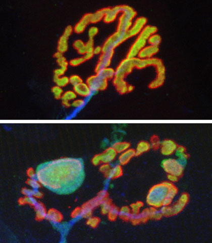

News Archives : 2010 : Exercise, Caloric Restriction Rejuvenate Aging Synapses
by Alvin Powell
August 2, 2010

The neuromuscular junction on the top is from a young adult mouse; that on the bottom from an 2-year old mouse, which is quite old for a mouse. The postsynaptic neurotransmitter receptors are strained in red, the presynaptic neurotransmitter release apparatus in green and the axon in blue. In the young adult, the perfect apposition of pre- and postsynaptic structures is seen as yellow (red+green). In the old animal, the receptors are broken into small islands, some are no longer covered by nerves, and the axon is distended in some regions and atrophic in others. All of these age related changes are attenuated with caloric restriction or exercise, and some can even be reversed by one month of exercise begun when the animals are already old.
Harvard researchers have uncovered a mechanism through which caloric restriction and exercise delay the debilitating effects of aging by rejuvenating the connections between nerves and the muscles that they control.
The research, conducted in the labs of Joshua Sanes and Jeff Lichtman, both members of the Center for Brain Science at Harvard and professors of molecular and cellular biology, begins to explain findings that have been widely reported and accepted, that both exercise and restricted-calorie diets help to stave off the mental and physical degeneration of aging.
Sanes said the work, conducted in laboratory mice genetically engineered so their nerve cells glow in fluorescent colors, shows that some of the debilitation of aging is due to the deterioration of the connections that nerves make with the muscles they control, structures called neuromuscular junctions. These microscopic links are remarkably similar to the synapses that connect neurons to form information-processing circuits in the brain.
In a healthy neuromuscular synapse, nerve endings and their receptors on muscle fibers are almost a perfect match, like two hands placed together, finger to finger, palm to palm. This lineup ensures maximum efficiency in transmitting the nerve’s signal from the brain to the muscle which is what makes the muscle contract when we want to move.
As people age, however, the neuromuscular synapses can deteriorate in several ways. Nerves can shrink, for example, failing to cover the muscle’s receptors completely. Sanes said the intersections between the nerves and muscles can go from a continuous network that looks something like a pretzel to resembling a bunch of beads – broken into discontinuous individual lumps, interfering with transmission of nerve impulses to the muscles. This loss of activity can result in wasting and eventually even death of muscle fibers.
The work showed that mice that following a restricted-calorie diet largely avoid that age-related deterioration of their neuromuscular junctions, while those that undergo a one-month exercise regimen when they’re already elderly partially reverse the damage. “With calorie restriction, we saw reversal of all of these things.
With exercise, we saw a reversal of most, but not all,” Sanes said.
Read more in PNAS (Advance Online Publication)
Read more in Harvard Science
Read more in HARVARD gazette